Vivero boutique · San Pedro de la Paz
Un jardín para inspirarte
Plantas, diseño y pequeños detalles que transforman tus espacios.
- Lunes a sábado · 9:30 a 18:30
- Ernesto Pinto Lagarrigue 793
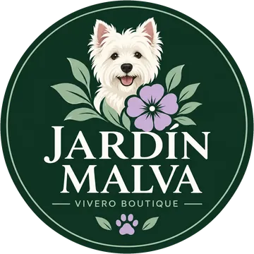
El vivero
Lo que encontrarás
naturaleza para cada rincón
-
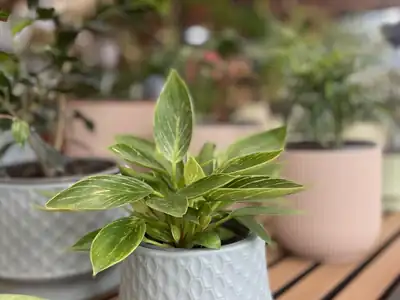
Plantas de interior
Para cada rincón de la casa, con mucha o poca luz.
-
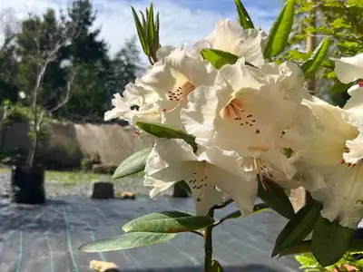
Plantas de exterior
Para el jardín, la terraza o ese balcón que pide verde.
-
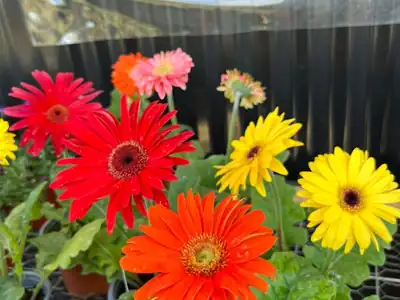
Flores de temporada
Lo que está floreciendo ahora, según el mes.
-
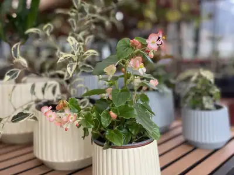
Maceteros
Cerámica esmaltada y piezas de línea contemporánea.
-
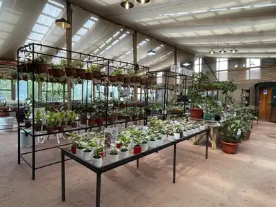
Accesorios de jardinería
Herramientas y detalles para cuidar lo que te llevas.
-
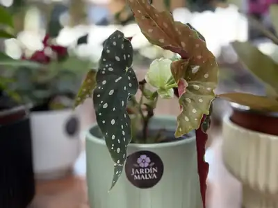
Malva Atelier
Nuestra línea propia: maceteros de diseño y piezas exclusivas.
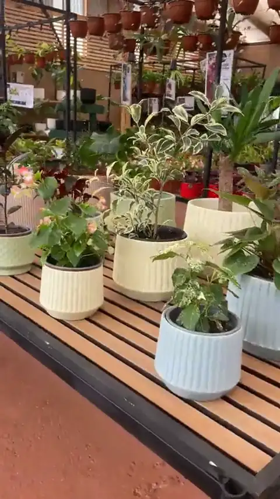
Un paseo
Date una vuelta
sin apuro, como en casa
Mesones largos, luz que entra por el techo y espacio para recorrer con calma. Así se ve el vivero por dentro.
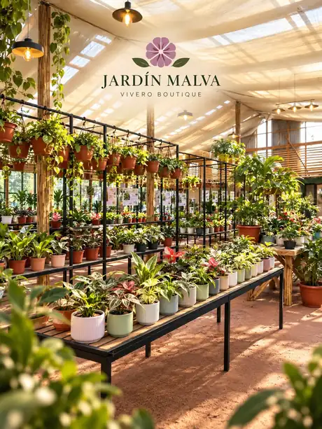
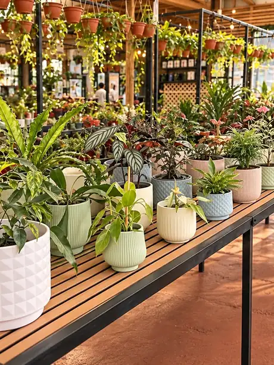
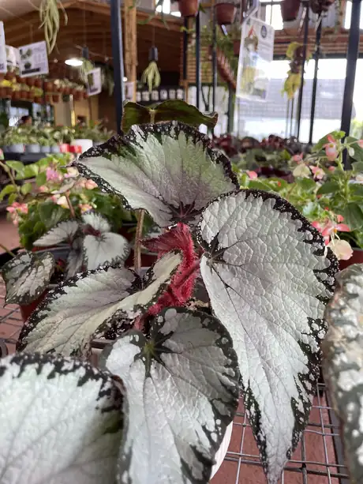
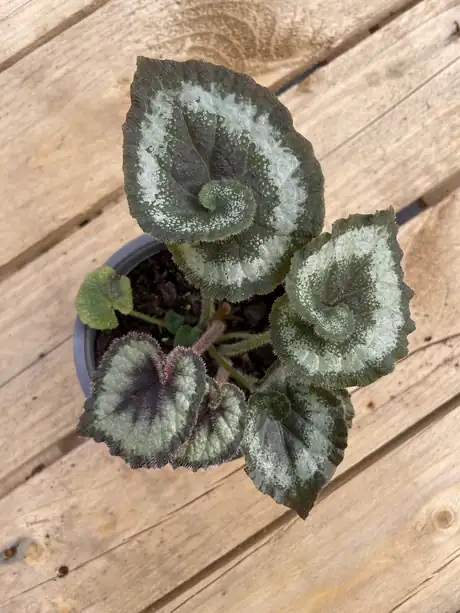
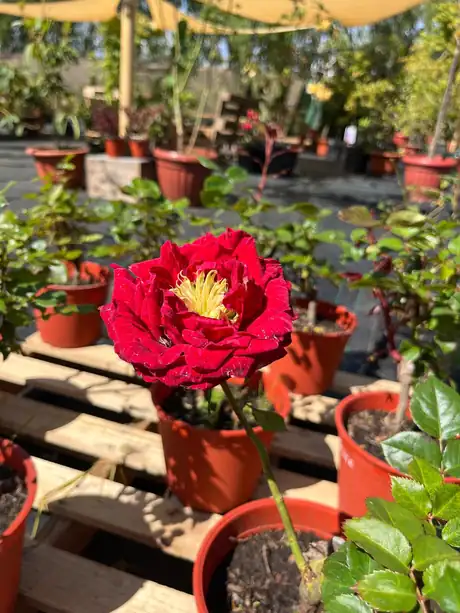
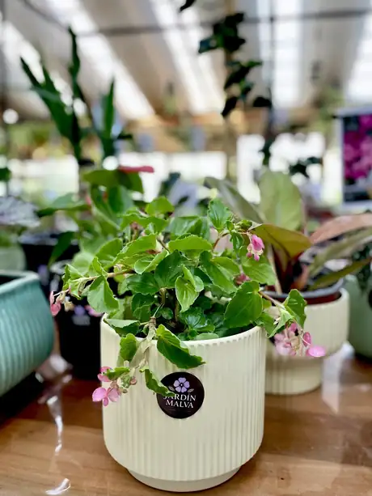
Nuestra historia
El nombre viene de ella
Jardín Malva nació como un homenaje a Malva, una querida perrita West Highland White Terrier. Su nombre quedó en la puerta y su figura, en el emblema de la casa.
De ahí viene también nuestra manera de recibir: con calma, sin apuro y con la puerta abierta a quienes llegan con su perro.
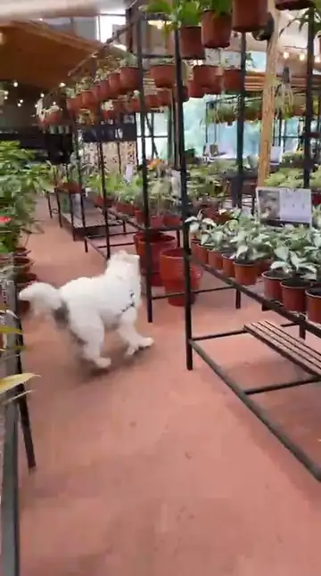
Pet friendly
Ven con tu perro
aquí también es visita
En Jardín Malva los perros son bienvenidos. Y los nuestros suelen salir a recibirlos.
Ella es Petunia
Nuestra anfitriona. Siempre con delantal y lista para recibirte.
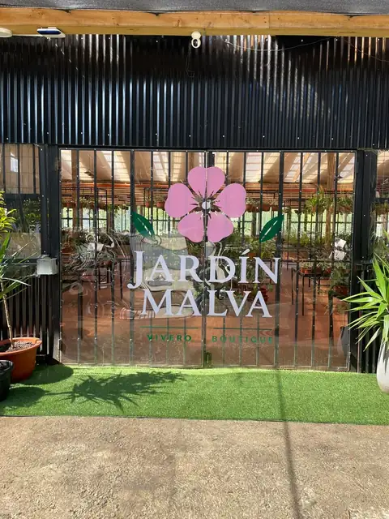
Visítanos
Te esperamos
- Dirección
- Ing. Ernesto Pinto Lagarrigue 793
San Pedro de la Paz, Biobío - Horario
- Lunes a sábado · 9:30 a 18:30
- Mascotas
- Espacio pet friendly. Ven con tu perro.
- Cómo reconocernos
- Busca la fachada negra con la flor malva.
Lo que llega cada semana
descubre tu próximo rincón favorito
Novedades, plantas recién llegadas y rincones del vivero. Síguenos en @jardin.malva.
Ver en InstagramContacto
Conversemos
Pregunta por una planta, por cómo cuidarla o por cómo llegar.